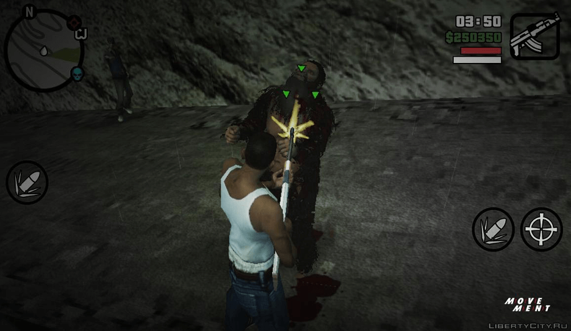
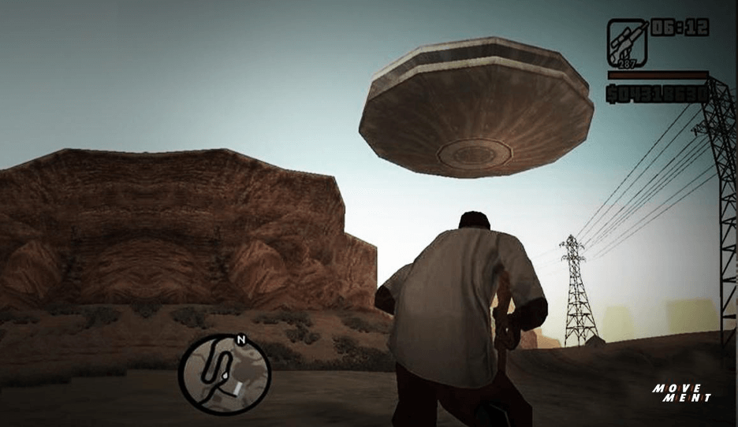
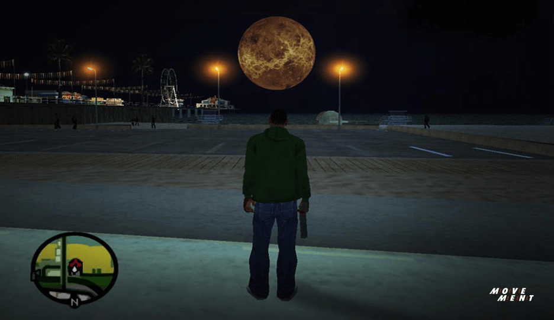
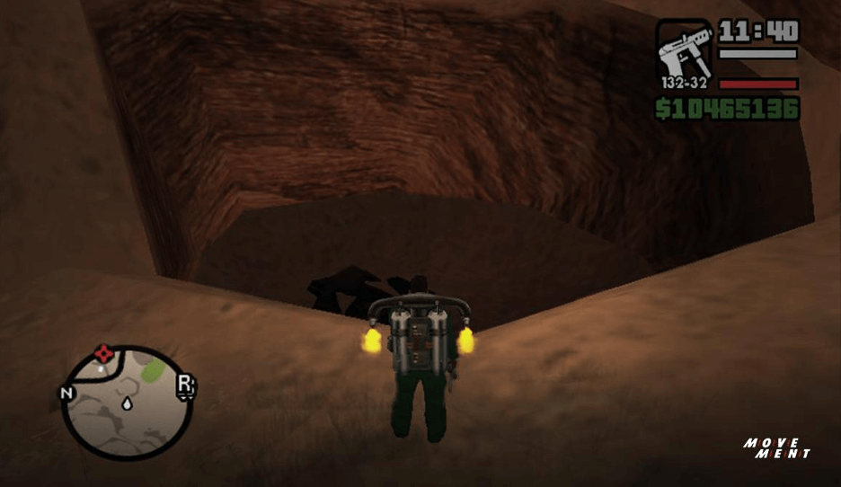

4EASTER EGG GTA SANANDREAS
November,1 2022
Grand Theft Auto atau GTA adalah salah satu video game yang eksistensinya masih signifikan sejak 2004 sampai saat ini. Selain menarik untuk dimainkan berlama-lama, banyak misteri yang tersimpan di dalamnya sampai-sampai kita ngga pernah ngerasa cukup. Nah, berikut adalah deretan Easter Egg di GTA San Andreas dan cara nemuinnya. Mana aja nih yang udah Lo temuin?
1.BIGFOOT

tau yang namanya Bigfoot? Itu Loh makhluk misterius berbulu tebal dengan ukuran raksasa. Bigfoot ini sebenarnya legenda dari Kanada yang punya nama lain, yaitu “Sasquatch”. Nama Bigfoot sendiri, tidak salah lagi dari kakinya yang emang gede banget, katanya sih sampe 60 centimeter, sedangkan ukuran rata-rata manusia hanya sekitar 26 centimeter aja. Nah, legenda yang terkenal ini katanya bisa ditemukan di hutan Amerika bagian utara. Eits, ga cuma di sana aja, Lo juga bisa nemuin Bigfoot di GTA San Andreas loh! Cara untuk ngeliat Bigfoot di GTA San Andreas adalah:
Download mod GTA yang berisikan Bigfoot
Setelah in-game Lo cari tanda “D” pada map
Masuk ke lingkaran merah di tanda D dan mulai misi
Misi itu emang bertujuan untuk membunuh empat Bigfoot yang tersebar di map. Hati-hati nih Move Creators, Bigfoot ini kuat banget! Jadi, sebelum memulai misi, persiapkan dulu persenjataan dan amunisi untuk membunuh Bigfoot. Sebenarnya, sebelum ada mod ini, Bigfoot emang easter egg di GTA San Andreas yang original di versi beta. Tapi entah kenapa, easter egg ini di take out pada versi full-nya. Mod ini diciptain karena banyak rumor dari para player, jadi memanfaatkan suasana aja.
2.UFO

Easter egg di GTA San Andreas ini merupakan objek yang cukup familiar nih, bernama UFO (Unidentified Flying Object). UFO ini emang dipercaya adalah pesawat terbang canggih milik alien yang keberadaanya masih menjadi sebuah perdebatan. Oleh karena itu, keberadaan UFO di GTA San Andreas ini juga menarik untuk diomongin. Selain versi mod, di mana kita bisa naikin UFO sebagai pesawat biasa, ada ga sih sebenarnya UFO ini. Sejauh ini ada dua jenis penampakan UFO yang bisa Lo temuin, yaitu:
UFO yang terlihat seperti cahaya yang berkedip
Di Lil’ Probe Inn
UFO pertama yang bisa Lo liat adalah UFO yang terlihat seperti cahaya yang berkedip. Sebenarnya ini sudah jadi tradisi di dalam GTA yang sudah dimulai dalam GTA III. Jadi, Lo bisa nemuin ini hampir di semua GTA setelah GTA III. Di San Andreas, Lo bisa nemuin cahaya berkedip ini pas malam hari di langit di daerah sekitar Area 69. Area 69 ini adalah parodi dari Area 51 yang katanya di sana pemerintah Amerika Serikat mengadakan penelitian terhadap benda asing dan juga alien. Tapi harus sabar-sabar nyarinya, karena tidak ada yang tau pasti dimana UFO itu akan muncul. Yang kedua adalah di Lil’ Probe Inn. Kalo yang ini bukan UFO beneran, tapi hanya miniatur UFO aja. Yang punya tempat ini obses banget sama Alien dan ngaku pernah ketemu Alien. Oleh karena itu ada miniatur Alien di tempat ini. Coba deh Lo ke sana dan tembak miniatur UFO itu. Apa ya yang bakal terjadi?
3.THE MOON
Sejak ada di GTA III, bulan emang bikin suasana malam di GTA jadi lebih berasa realistis, tapi siapa sangka kalo Rockstar naro easter egg di bulan ini. Ya Lo ga salah baca kok! Rockstar emang seniat itu, sampai-sampai naro easter egg di bulan ini. Coba beberapa langkah di bawah ini untuk tau easter egg apa yang tersimpan di bulan ini:
Coba cari area yang ga tertutup gedung dan berarea luas, seperti tebing atau pantai
Keluarin senjata jenis sniper yang ada scoop untuk ngebidik bulan
Tembak bulan dan lihat ukurannya yang berubah-ubah
Setelah Lo tembak dengan sniper, bulan terlihat membesar dan setelah beberapa kali ditembak akan mengecil. Jadi, lo bisa atur seberapa ukuran bulan yang Lo mau nih. Ada-ada aja ya? Tapi Lo bisa lakuin ini cuma pake sniper aja. Senjata lainnya seperti pistol atau shotgun ga akan ngerubah ukuran bulan, walaupun Lo tembak sampe peluru Lo habis. Mungkin, kalo pake sniper ini pelurunya bisa sampai ke bulan sampe bisa resize bulan ini ya.

4.BODY BAGS

Kita kembali lagi ke Area 69 yang menyimpan banyak misteri nih. Ada satu easter egg lagi yang tersimpan di northwest (barat laut) dari Area 69 ini. Tapi sebelum Lo coba, pastiin siapin mental, ya, soalnya easter egg kali ini agak serem Move Creators! Untuk nemuin easter egg ini, hal yang perlu Lo lakuin adalah:
Pergi ke daerah barat laut dari area 69
Jangan lupa bawa kendaraan atau lebih mudah jika ada jetpack
Setelah sedikit muterin daerah itu, Lo akan ngeliat lubang dengan tumpukan body bags (kantong mayat). Lebih mudah nemuinnya kalo lo pake jetpack, karena Lo akan bisa ngeliat dari atas dengan landscape yang lebih luas. Wah serem banget ya Move Creators. Kira-kira ini mayat-mayat siapa ya? Apakah hasil eksperimen dari Area 69? Udah gitu bisa aja ini bukan mayat manusia, melainkan Alien yang ditangkap oleh Area 69. Nah ini masih jadi perdebatan sampai hari ini. Gimana menurut Lo?
Itu dia empat easter egg di GTA San Andreas yang bisa Lo temuin. Masih banyak banget easter egg di GTA yang bisa di-explore. Pas banget buat Lo yang udah namatin GTA atau lagi stuck di misi dan cari kegiatan lainnya di game ini. Coba temuin semua easter egg-nya. Bisa banget kan dijadiin konten untuk YouTube Lo. Kalo Lo suka artikel tentang GTA, Lo juga bisa cek artikel MyMOVEment.id lainnya tentang evolusi game GTA yang mungkin Lo belum tau. Yuk, cari tau!